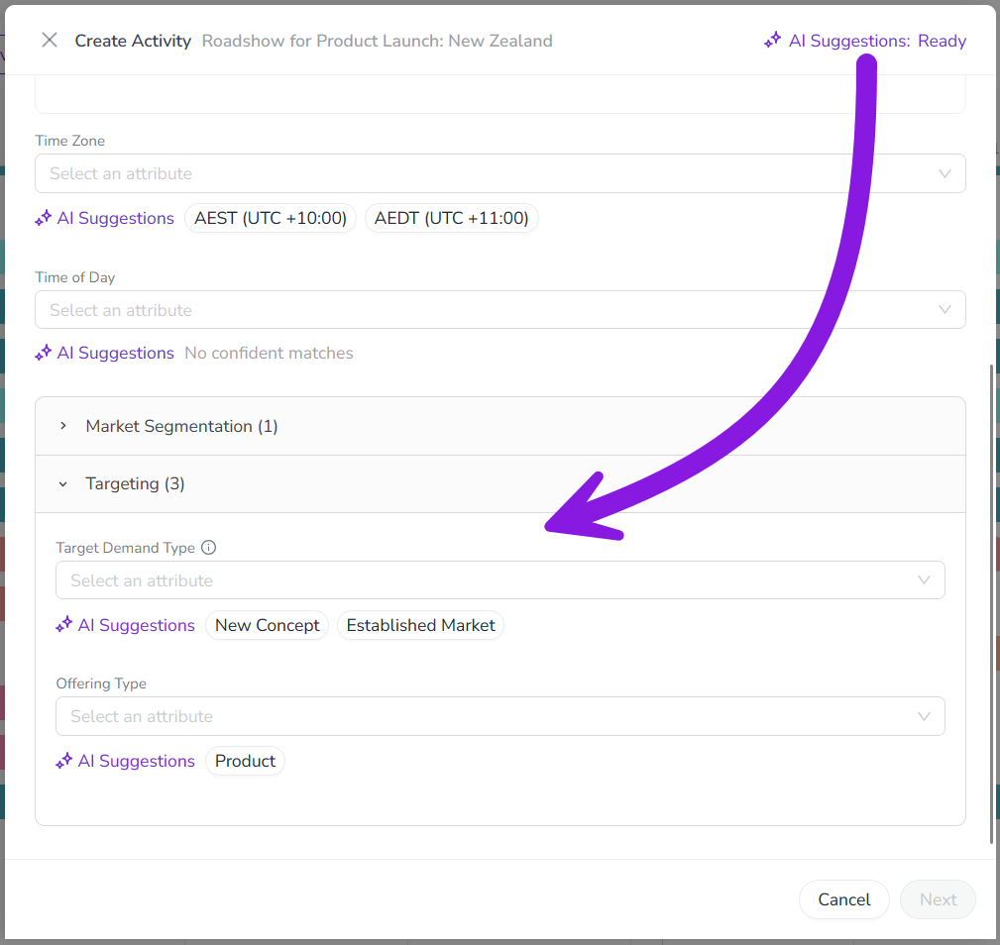
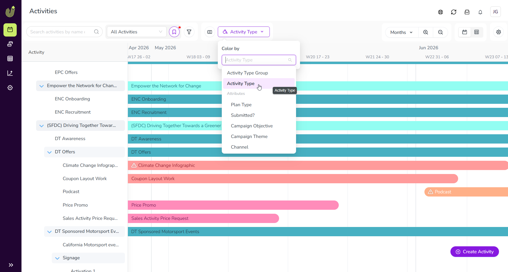
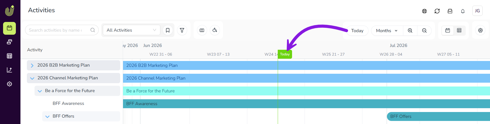

What's new: 2026.6
Discover all the new Uptempo features introduced with the 2026.6 release, available from June 23, 2026.
Campaign Management: Activity Configuration
Control access to individual activity attributes
Uptempo's activity access control system now supports permissions based on activity attributes and their values, giving you fine-grained control over your data governance.
Restrict editing for individual attributes: Limit who can edit specific attribute values to ensure only authorized users can change important data. Restricted attributes remain visible in the details panel as read-only fields for users without edit access.
Make attribute edit access dynamic: Control who can edit a specific attribute based on the activity's type, or on the values of other attributes. For example, you can allow a user to update the Channel attribute only for Tactic activity types, or only if the Region attribute is set to EMEA.

→ Learn more about available properties for creating access control statements
Update Impact Modeler projections without losing historical data
You can now create additional pipeline models in Impact Modeler, allowing you to update projections for upcoming planning cycles without changing historical data.
Adapt your models over time: Create a new version of your pipeline model for each fiscal year to refine your projections, including changing or renaming funnel stages to match evolving business processes. Set the current model as the default for impact projections on new activities, while keeping previous models in place on past-year activities to preserve historical data.
Manage models easily: Create new pipeline models from scratch, or by copying an existing model. New models stay in draft status until you're ready to roll them out, and can be activated or deactivated at any time.
Support for multiple active models: If you have more than one active model, the Impact section on activities displays a switcher that lets users change between the available active models on the fly. When actual results are pulled in, the selected model locks to protect your data integrity.
Improved interface and terminology: The Impact Modeler UI has been redesigned to improve usability. In addition to a visual refresh, key terms and help text have been updated for clarity. For example, you now configure "segment-specific metrics" instead of "drill-downs".

→ Learn more about creating additional models in Impact Modeler
Segment Impact Modeler pipeline models by activity type group
To make your Impact Modeler projections more accurate, pipeline model segments now support activity type groups as a dimension, allowing you to set custom performance metrics for different channels (like events vs. digital) without building attribute workarounds.
Eliminate custom attribute workarounds: You no longer need to create "fake" attributes for segment-defining data that's captured in your activity type groups. When you configure Impact Modeler segments, you can now select any of these groups as one of the three dimensions that define a segment.
Refine your model projections: Apply highly specific conversion rates, velocities, and average deal sizes to distinct activity type groups, ensuring your pipeline projections accurately reflect how different marketing initiatives actually perform in the real world.
→ Learn more about configuring the pipeline model in Impact Modeler
Campaign Management: Activities
Get AI suggestions when creating activities
The activity setup assistant now uses Uptempo AI to suggest values for single-select attributes based on your campaign context, helping to speed up activity creation and reduce manual effort.
Context-aware suggestions: After you enter a name for a new activity, Uptempo AI analyzes the name and your activity hierarchy (including the details of parent and sibling activities) for context, then suggests likely values for all single-select attributes on the activity.
Confidence-based suggestions: The number of suggestions shown depends on Uptempo AI's confidence level. For high-confidence attributes, only a single suggestion is shown to reduce decision fatigue. For medium confidence, Uptempo AI displays up to three options. If Uptempo AI can't find any suggestions that meet the minimum confidence threshold, it doesn't suggest a value at all.
Accept suggestions with a click: Just click a suggestion to set it as the attribute value. If none of the suggestions is what you're looking for, you can also manually select a different value at any time.
{kind=link}

→ Learn more about creating activities with the help of Uptempo AI
Differentiate activity types by color on the Timeline
You can now color-code activity bars by their activity type on the Timeline, making it easier to visualize the mix of tactics across a campaign hierarchy at a glance.
Assign colors to individual activity types: Administrators can now assign a color to each individual activity type — not just the activity type group they belong to. For example, you can assign different colors to the Webinar and Email activity types to make it easy to tell activities of these types apart, even when both belong to the same group.
Updated color-coding options: On the Timeline in the
 Activities section, use the new Activity Type option in the Color by menu to color-code by individual activity types. The new Activity Type Group option replaces the previous Default color option, allowing color-coding by group.
Activities section, use the new Activity Type option in the Color by menu to color-code by individual activity types. The new Activity Type Group option replaces the previous Default color option, allowing color-coding by group.Assess your activity mix: With color-coding by activity type, you can easily see whether your campaigns have the right mix of tactics at a glance, without the need to drill down into each activity separately to see its type.
{kind=link}

→ Learn more about configuring color-coding for activities on the Timeline
Quickly return to the current date on the Timeline
Click the new Today button on the Timeline to instantly return to the current date, making it easy to reorient after scrolling through your activity schedule.
{kind=link}

Navigate between activity setup assistant steps without losing data
When you create an activity, the activity setup assistant now remembers all data you entered when you go back to an earlier step.
You can now move between steps in the activity setup assistant without losing previously entered information. For example, after you enter Estimated Costs on the Budget step, those details remain intact if you need return to the previous Details step to make adjustments to the activity's attributes.
Navigate impact projections in a reorganized layout
We've reorganized the Impact section in the activity details panel to make it easier to analyze impact projections.
Impact projection charts on their own tab: You can now find the Impact over time chart on its own dedicated Chart tab, making the Planned tab less cluttered and easier to navigate.
Funnel visualization always visible: The demand pipeline funnel visualization is now displayed automatically on the Planned tab, so it's easier to find.

→ Learn more about analyzing the pipeline impact of your activities
Drop-Down List attributes save on selection
Drop-Down List attributes in the activity details panel now save as soon as you select a value, rather than waiting for you to click outside the field. The Saved notification appears right away to provide instant confirmation that your change was saved.
Uptempo API
Manage Campaign Management teams through the API
You can now manage Campaign Management teams through the Uptempo API, making it easier to manage user access at scale.
Create teams: Use the Teams API to create teams, set their names, and optionally add initial members in a single operation.
Manage team membership programmatically: Add or remove users from any team through the API, enabling automated provisioning through your existing user management systems.
Retrieve team data: Fetch a list of all members in a team through the API to support integrations or reporting.
Synchronize activity attribute options with external tools
The API endpoints for options on list-type attributes (Drop-Down List and Multi-Select List) now have new fields to allow for synchronizing Uptempo attribute options with attribute options in external systems.
Support for external IDs: The Attribute Definitions endpoints now include an
externalIdfield. Use this field to pass and store unique IDs for each attribute list option, providing the stable identifier needed to map Uptempo attribute options to their counterparts in external systems.Support for list option labels: The endpoints now also include a
valuefield. In responses toGETrequests, this field provides the current label (name) of each attribute list option. Use this field inPOSTandPUTrequests to update list option labels programmatically.
→ Learn more about the Attribute Definitions endpoints in the Uptempo API